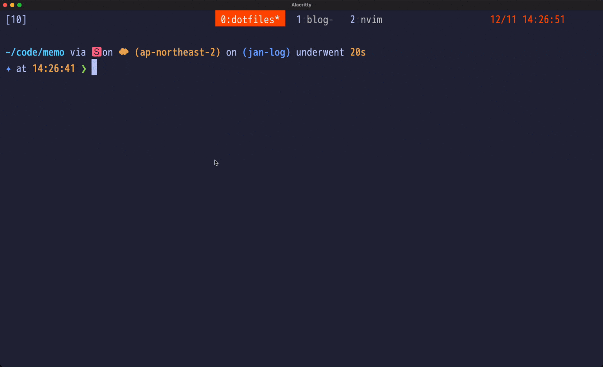
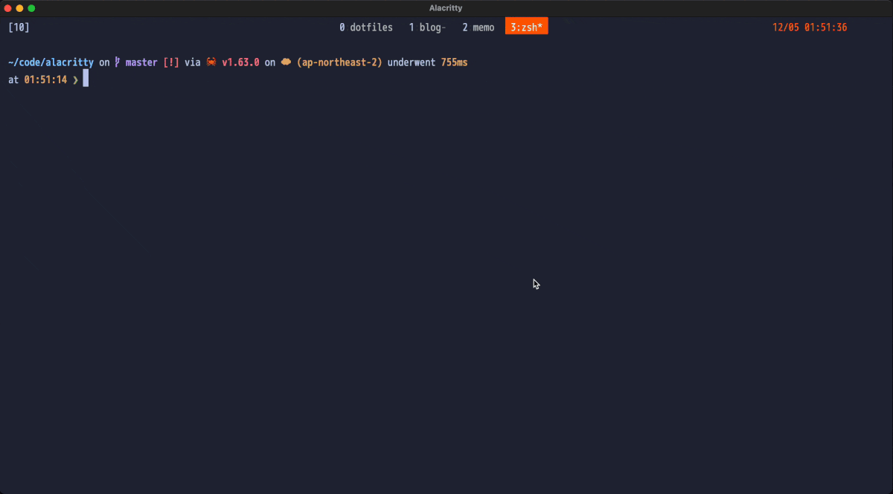
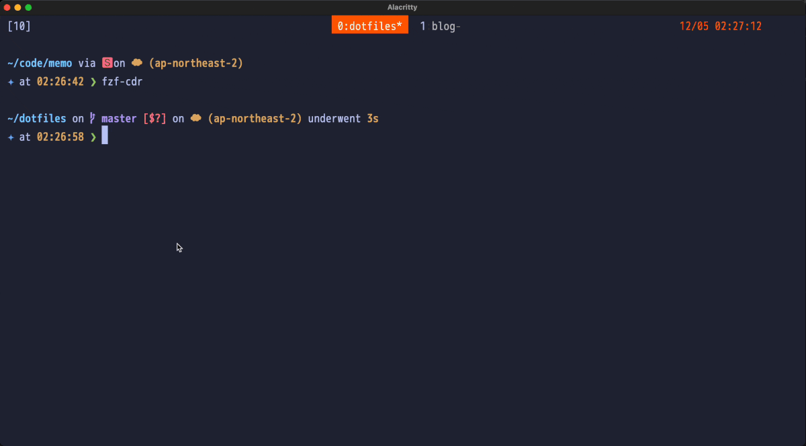
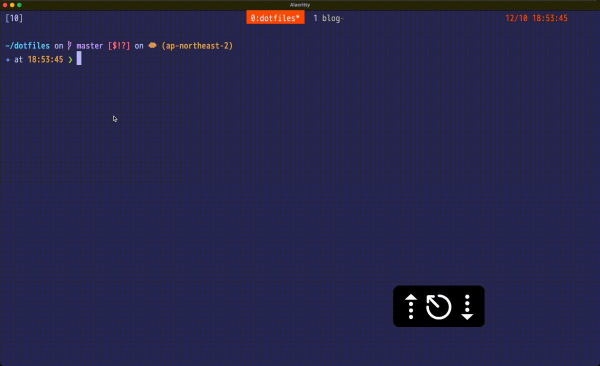
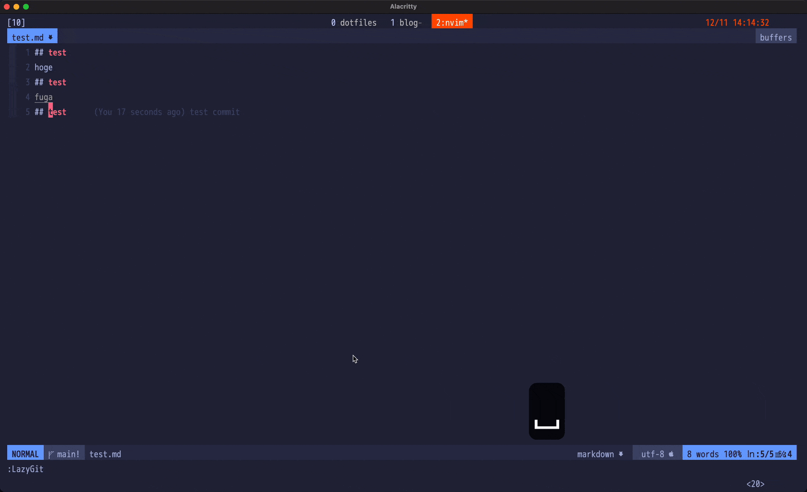
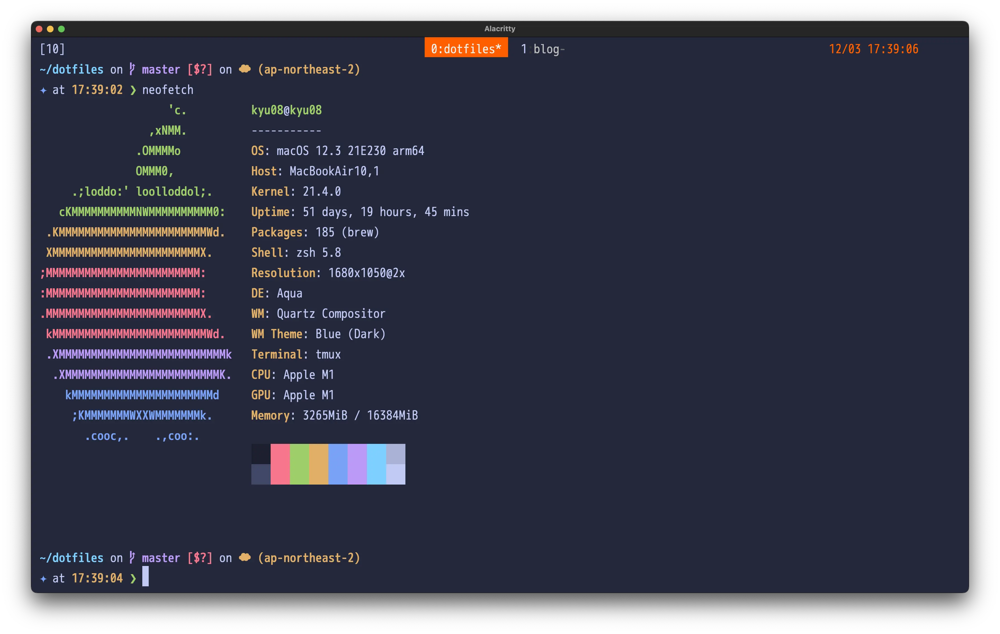
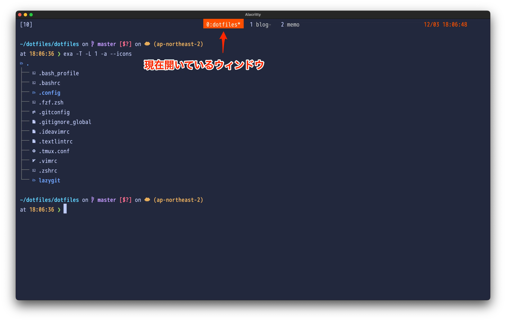
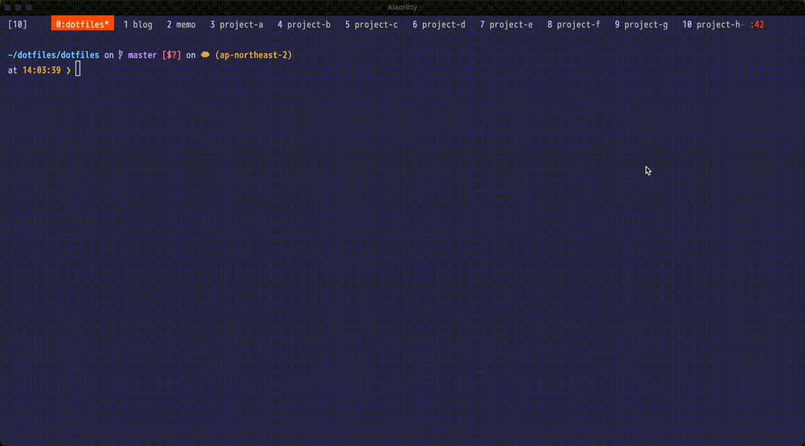
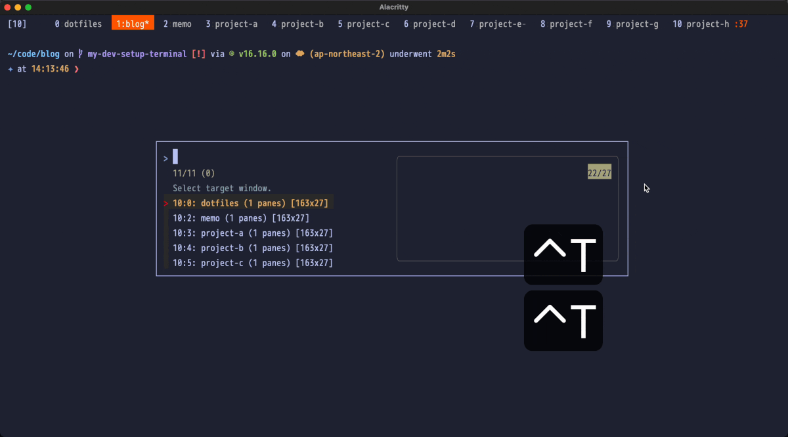

開発の効率化のためにやっていること ターミナル編

目次
【この記事はUnipos Advent Calendar 2022 の記事です】
この記事では筆者が開発の効率化のために行っている工夫や使っているツールなどについて紹介します。 「他にもこんなツールあるよ！」「こんな設定おすすめだよ！」などなどありましたらtwitterとかで教えてもらえると助かります。
今回はターミナル編です！
シェル⌗
シェルはzshを使っています。 一時期fishも使っていましたが、環境移行のコストが低かったりPOSIX準拠だったりするメリットに旨味を感じてzshに乗り換えました。
よく使うalias⌗
zshではalias hoge='echo hoge'のように記述することでaliasを定義することができます。
ここでは筆者がよく使うaliasをいくつか紹介します。
alias m='MEMODIR=~/code/memo; cd $MEMODIR; FILE=$MEMODIR/$(date +%Y%m%d).md; if [ ! -e $FILE ]; then echo "# todo \n\n# done\n" >> $FILE; fi; nvim $FILE'
日毎にyyyymmdd.md形式の名前のファイルを作成してvimで開く。
ファイルが存在していなければ
# todo
# done
をファイルに書き込んだうえでvimで開く、という内容のワンライナーです。
実際に呼び出すとこんな感じです。

ちなみに筆者は
# todo
- タスクA
- 子タスクa
- 子タスクb
- タスクB
# done
のような感じでタスクを書いていき、完了したら以下のようにdoneに移すという素朴な方法でタスク管理をしています。
# todo
- タスクB
# done
- タスクA
- 子タスクa
- 子タスクb
alias ghw='gh repo view -w'
ghコマンドを利用して現在いるリポジトリをブラウザでGitHubで開くコマンド

alias pbc='pbcopy && pbpaste'
make test | pbcのように出力をパイプでpbcに渡すとクリップボードにコピーしつつ標準出力に出力してくれる。
コマンドの出力をコピーしたいけど出力内容もその場で確認したいときに便利。
こちらの記事で紹介されていた。
https://takuya-1st.hatenablog.jp/entry/2017/05/30/093000
alias finder='open -a Finder ./'
現在いるディレクトをfinderで開くコマンド
ごく稀に使う。
ディレクトリ移動⌗
zshにはcdrという、移動したことがあるディレクトリを自動的に保持してくれる機能があります。
これをいい感じにファジーファインダーから呼び出すスクリプトを公開して下さっている方がいたのでありがたく使わせてもらっています。
https://www.rasukarusan.com/entry/2018/08/14/083000
fzfをインストールした上で以下のスクリプトを.zshrcに記述するとcで呼び出すことができます。
# fzf-cdr
alias c='fzf-cdr'
function fzf-cdr() {
target_dir=`cdr -l | sed 's/^[^ ][^ ]* *//' | fzf`
target_dir=`echo ${target_dir/\~/$HOME}`
if [ -n "$target_dir" ]; then
cd $target_dir
fi
}
# cdrの設定
autoload -Uz is-at-least
if is-at-least 4.3.11
then
autoload -Uz chpwd_recent_dirs cdr add-zsh-hook
add-zsh-hook chpwd chpwd_recent_dirs
zstyle ':chpwd:*' recent-dirs-max 500
zstyle ':chpwd:*' recent-dirs-default yes
zstyle ':completion:*' recent-dirs-insert both
fi
# fzfの設定
export FZF_DEFAULT_OPTS='--color=fg+:11 --height 70% --reverse --exit-0 --multi'
これを実際に使うとこんな感じになります。ファジーファインダーを利用して効率的にディレクトリ移動することができます。

やっていることは以下です。
.zshrcに定義したfzf-cdrを実行- 移動したいディレクトリのパスの一部を入力
- 候補から移動したいディレクトリを選択する
コマンド履歴検索⌗
実行したコマンドの履歴についてもfzfを使って絞り込みを行うようにしています。
これもスクリプトを公開して下さっている方がいたのでありがたく使わせてもらっています。
https://techblog.sgr-ksmt.dev/2016/12/10/smart_fzf_history/
以下のスクリプトを.zshrcに記述すると、ctrl + rでコマンド履歴を呼び出すことができます。
function select-history() {
BUFFER=$(history -n -r 1 | fzf --no-sort +m --query "$LBUFFER" --prompt="History > ")
CURSOR=$#BUFFER
}
zle -N select-history
bindkey '^r' select-history

Git操作⌗
Git操作のほとんどはGitのTUIクライアントであるLazygitを使っています。
https://github.com/jesseduffield/lazygit
Lazygitはターミナル上で動作するリッチなGitクライアントでGitに関する大抵のことを行うことができます。(機能が豊富すぎて何ができて何ができないのかを正確に把握できていない)
以下はLazygitを使って変更をaddしてcommitしてpushする例です。

見やすいですし、少ないタイプ数で操作できる点でおすすめです。他にも基本的なブランチ操作はもちろんのこと、git rebase -i相当のこともスピーディーにできるのでよく使っています。
ちなみに筆者はkdheepak/lazygit.nvimというプラグインを使ってNeovim上からLazygitを呼び出しています。
https://github.com/kdheepak/lazygit.nvim
ターミナルエミュレータ⌗
筆者はターミナルエミュレータ(以下ターミナル)としてAlacrittyを使っています。
https://github.com/alacritty/alacritty
筆者は普段開発にNeovimを利用しているのですが、以前からプロジェクトの全文検索に時間がかかってしまう点が気になっていました。 動作が高速なターミナルを探していたところRust製のターミナルであるAlacrittyにたどり着きました。
iTerm2からの乗り換えでしたが満足できるだけの速度になりました。ターミナルの速度を早くしたい人にはオススメです。あとは設定をyamlで記述できるのも好みなポイントです。
カラースキームはTokyo Nightを利用しています。
https://github.com/zatchheems/tokyo-night-alacritty-theme

Alacrittyにはタブ機能がなくタブ的な機能を実現するためにはtmuxなどのターミナルマルチプレクサを利用する必要があるため筆者はtmuxを利用しています。 設定・プラグインなどは後述しますが、tmuxの操作感も好みなので割と満足しています。
他にもRust製のターミナルとしてWarp, Weztermなどがありますが筆者の環境ではWarpはNeovimのcolorschemeの反映がうまくできず、Weztermは画面の再描画まわりの不具合が多少あったため、採用しませんでした。(Warp便利そうだしみやすいので使いたかった)
ターミナルのタブ管理⌗
前述の通りAlacrittyにはタブ機能がないため、tmuxを使ってターミナルのタブ管理を行っています。
ステータスラインの表示⌗
ステータスラインは比較的シンプルにしていて、
- ウィンドウ一覧
- 現在時刻
を表示するようにしています。

普段の開発ではプロジェクトごとにウィンドウを開き、必要に応じて切り替える運用にしています。
ウィンドウの切り替え⌗
筆者はふだんプロジェクトごとのウィンドウに加えてmemo用のウィンドウ・dotfiles用のウィンドウなども開いており、常時ウィンドウが15前後あります。筆者は簡単なタスク管理もmemo用ウィンドウに立ち上げたNeovim内で行っているため、ウィンドウの切り替えを頻繁に行います。
以前まではウィンドウ切り替えを
prefix + wでウィンドウの一覧を表示- 目的のウィンドウの位置を確認
- 目的のウィンドウまで
ctrl + n,ctrl + pで移動 - 選択する
という手順で行っていましたがウィンドウが増えてくると地味にウィンドウ移動が大変になっていきました。以下は従来のウィンドウ切り替えの様子です。

どうにかもう少し楽にウィンドウ切り替えをできないかと探していたところsainnhe/tmux-fzfに出会いました。
https://github.com/sainnhe/tmux-fzf
sainnhe/tmux-fzfはファジーファインダーで効率的にtmuxを操作するためのプラグインです。
詳しくはリポジトリのREADMEに譲りますが、
- セッション管理
- ウィンドウ管理
- ペイン管理
- コマンドの検索
などが可能です。
筆者はウィンドウ管理機能の中のウィンドウの切り替え機能を使っています。 sainnhe/tmux-fzf を使うようにしたことでウィンドウ切り替えを
prefix+prefixでtmux-fzfのウィンドウ一覧を表示- 目的のウィンドウ名の一部を入力
- 選択する
という手順でできるようになりました。文字にすると違いが伝わりづらいですが、ファジーファインダーを使ってウィンドウの選択を行うことができるようになったことでキーのタイプ数や切り替えの際の脳の負荷を大幅に減らすことができました。

おわりに⌗
ここまで読んでくださってありがとうございました。
需要がありそうだったら
- Neovim編
- alfred編
- chrome拡張機能編
なども書こうと思います。